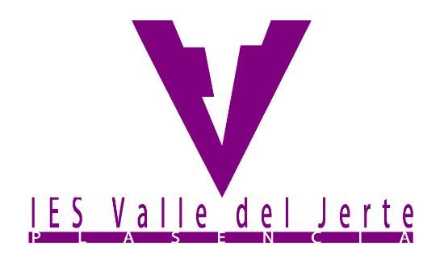
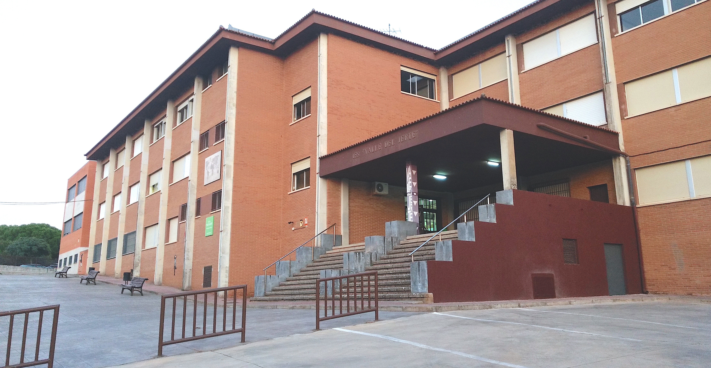
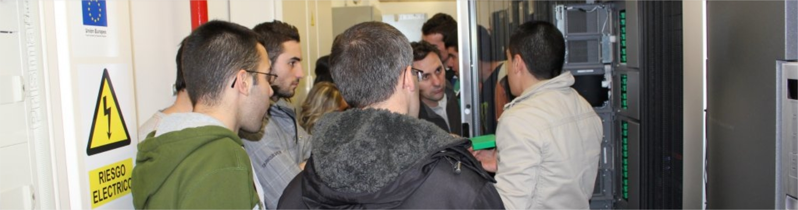

El IES Valle del Jerte es uno de los centros de referencia en la ciudad de Plasencia.
Cuentas con 765 alumnos pertenecientes a:

Ofrecemos una amplia oferta de Formación Profesional reglada de la familia de Informática y Comunicaciones:

Colaboramos con decenas de empresas del sector para ofrecer oportunidades de empleo para nuestros alumnos egresados:
Dirección: Calle Pedro y Francisco González, s/n, 10600 Plasencia, Cáceres
Teléfono: 927 01 77 74
Email: ies.valledeljerte@edu.juntaex.es
Disponemos de un Campus Virtual bajo la tecnología de Moodle para dar soporte a toda la docencia presencial de nuestros Ciclos Formativos: